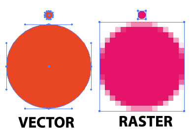

Vector on the web!
Vectors are made of paths, not pixels.
... JPG ...
... PNG ...
... GIF ...
it's really not that scary
Enlarge to any size with no loss in quality!
This dolphin is 2kb!
This dolphin is 4kb!
You can change the color of the paths...
path.purple {
fill: #6C5196;
}
Patterns!
Use an SVG as a mask for another image!
*svg options not supported in all browsers